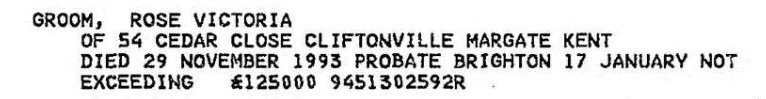

Rose Victoria Groom (née Dane) 1912 - 1993
[ Home ] | [ Calendar ] | [ Surnames Index ] | [ Census Index ] | [ Family History ]The child of Joseph Dane (a master mariner, licensed victualler) and Emma Stupple (a domestic general servant), Rose Dane, the second cousin twice-removed on the mother's side of Nigel Horne, was born in Faversham, Kent, England on Jan 8, 19121,2,3. She married Matthew Groom in Faversham around Aug 19364.
During her life, she was living at 39 Priory Row in Faversham on Sep 29, 19391; and at 54 Cedar Close, Cliftonville, Kent, England in 1993.
She died on Nov 29, 1993 in Thanet, Kent, England3.
Parents
- Joseph was born on Aug 27, 1872
- Emma Jane was born on Aug 29, 1875
Citations
- 1939 Register - Findmypast (was the sister of the head of the household)
- England & Wales births 1837-2006 - Findmypast
- England & Wales deaths 1837-2007 - Findmypast
- England & Wales Marriages 1837-2005 - Findmypast
Media
Rose Victoria Dane - Probate

England & Wales births 1837-2006 - BMD/B/1912/1/AZ/000337/018
England & Wales marriages 1837-2005 Transcription - BMD-M-1936-3-AZ-000382-034
1939 Register Transcription - TNA-R39-1716-1716H-024-20
England & Wales deaths 1837-2007 - BMD/D/1993/12/79590731
1939 Register - TNA/R39/1716/1716H/024/21
Family Tree

Generated by ged2site. Last updated on Jun 11, 2024